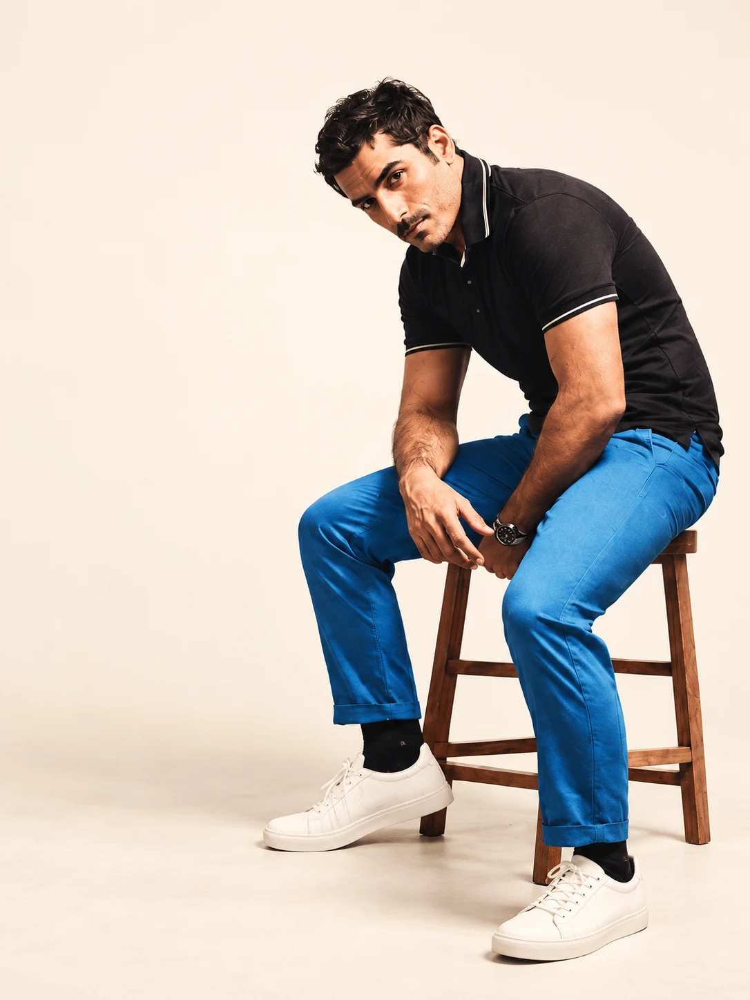

Actor & writerA life in stories
01 / AN INTRODUCTION01 / Selected workA collection in the making
In character.
In the moment.
Different lives. Different worlds.
One enduring love for the story.
Portfolio preview — project credits, stills, and video links to be curated with Adeel.
02 / On paperThe other side of the story
Before the scene,
there is a word.
A space for observations, unfinished questions, and stories that find their own way onto the page.
THE WRITING ROOMSelected writing will appear here when supplied.

THE PERSON BEHIND THE PART03 / A little closerAlways a
Always a
storyteller.
Actor. Writer. A life shaped by stories, both lived and imagined.
This space is reserved for Adeel’s own introduction: his journey, his influences, and what keeps him curious. Final biography to be provided by the client.
Start a conversation ↗04 / Get in touch For work & collaborations
Have a story in mind?
Film, television, writing,
and interesting possibilities.